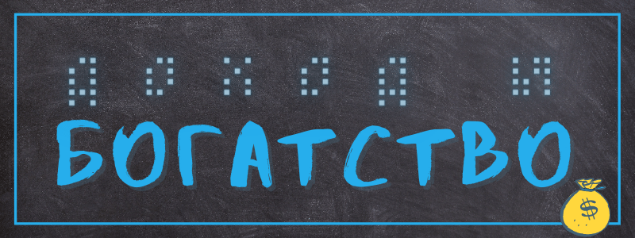
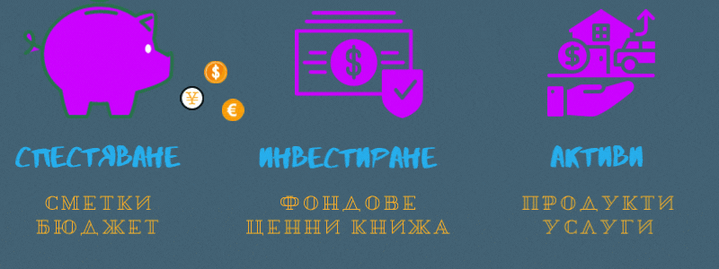

Каква е разликата между доход и богатство?
Свикнали сме да мислим за парите като за доход от една страна и разходи от друга.
Но това е защото повечето от нас разчитат на труда си.
А всъщност милиони европейци има нетна стойност 0 или по- малко. Дори в Германия, една от най- развитите икономически страни, този процент е близо 30.
Повечето от домакинствата, които са бедни или от средната класа нямат никакви активи, ако не се брои къщата им.
Богатство и доходи
Затова ако искаме да разберем по- добре връзката ни с парите, е хубаво да обърнем внимание на нещо друго, а именно…
Какво е богатството?
В тесен смисъл, сумата от имоти, пари в брой, стандартни и спестовни депозити, финансови активи като акции и облигации и текущата парична стойност на застраховката ви "живот" и пенсионните влогове минус всичките ви задължения (ипотеки, заеми).
А какво е доходът?
Това са паричните средства, които получавате за определен период, които включват заплати, пенсии, наеми, дивиденти или лихви по спестовни сметки.
"Годишен доход 20 £ лири, годишен разход 19.96 £, Резултатът е щастие. Годишен доход 20 £, годишен разход 20,06 £ - трябваха още шест пенса. Резултатът е мизерия." гласи цитатът от "Дейвид Копърфийлд".
Но освен за ежедневните ни разходи трябва да мислим и за непредвидените или основни такива- като например за лечение или къща.
Колко съм богат?
Само защото печелите пари в топ 1%, не ви прави топ 1%. Важно е нетното богатство, нетните активи или нетната стойност, по която се съставят класациите за най- богатите хора. Тяхната заплата понякога дори е нула.
Но дори и доходите на двама човека да са равни, може единият да има в пъти повече богатство. Може дори притежанията им да са еднакви, пак да не са еднакво богати, ако единият има примерно кредити или ипотека.
Да вземем един софиянец със средна заплата. Да кажем, че той постави дохода си например в калкулатор, който ви казва къде се намирате в спектъра на богатството като този: howrichami.givingwhatwecan.org/how-rich-am-i В зависимост дали има деца ще се окаже, че той е в топ 15% в света та дори и по- нагоре. Но дали наистина е така?
Да речем, че нашият човек идва от Враца, тъкмо е започнал да работи след завършването и живее на квартира.
Според данни от 2021 г. българите харчат около 20% за сметки (ток, вода, поддръжане на дома) и горе- долу толкова за храна и напитки. Ако прибавим и разходите за транспорт, вече отива половината заплата, а даже не сме стигнали до наема.
Значи за един месец няма как да спести дори за евентуален друг месец без доход.
Ако от фирмата решат да съкращават хора, изведнъж се оказва без нищо.
Е, в зависимост какво спестява.
Нищо чудно, че дори да живеем добре, имаме чувството, че сме на милостта на провидението. Страхът, че сме толкова близо до мизерията ни прави тесногръди, гневни и понякога жестоки.
Но ако имаме други форми на богатство, може това донякъде да компенсира несигурността, която ни мъчи.
Видове богатство
Нека да видим други критерии, които определят доколко сме богати:
Един от тях е например дали може да разполагаме с времето си. Дали лесно може да си вземем свободен ден, ако не се чувстваме добре сутринта. Дали може, ако работим за себе си, да работим повече, когато имаме някаква финансова цел, или обратното да го даваме по- леко ако имаме нужда от спокойствие или да се погрижим за някакъв страничен въпрос. Дали може да откажем да прекарваме времето си с хора, които не ни разбират или не са на нашата вълна.
Друго богатство, което не оценяваме докато не го загубим е здравето и съответно способността ни да водим активен живот. Освен, че здравите хора печелят повече, те са и по- щастливи. Ако може да има по- очевидно и тривиално изречение, трудно ще се намери. Но в ежедневието си честичко го забравяме.
Също малко познат критерий за богат, или по- скоро човек с висок социален статус, което е най- близкото възможно, е, че познава хора от различни прослойки. Обикновено колкото по- малко средства имаме, толкова по- затворено живеем. А досега с хора с различни произход или среда ни дават по- широка перспектива и ресурси, които ни позволяват да намираме решения за най- различни проблеми, които биха затруднили друг.
Както видяхме има различни видове богатство.
Потребление
Но трябва да споменем и още един важен фактор, който обрисува материалния ни и не само бит, а именно потреблението.
То се състои от два компонента: какво купуваме и в какво количество.
Когато пазаруваме сме с нагласата, че трябва да намерим най- изгодната сделка, защото сме убедени, че всички се чудят как да ни прецакат и да ни вземат трудно спечелените пари.
Но когато получаваме нещо майсторски направено, в което е вложен честен труд и фантазия, и не се безпокоим че няма да имаме достатъчно пари, понякога искаме дори да дадем повече пари отколкото ни искат.
Само когато това, което купуваме, е направено за недълга употреба или некачествено, тогава търсим сделки и не се замисляме дали работниците по веригата са компенсирани справедливо. И когато се счупи или скъса, не се замисляме много- много, че само създаваме отпадъци.
Ясно е, че не може да си купим всичко, което искаме.
Доколкото е възможно, хубаво е да предпочитаме качествени предмети, за които на производителите им е платено както подобава. Това може също да ни мотивира да искаме заплащане, благодарение на което може да си позволим скромни, но внимателно подбрани вещи.
Но да не прекаляваме. Понякога се случва така, че дори да ни увеличат заплатата, ако се убедим, че ни трябват някои подобрения, може да се окаже, че на края на месеца оставаме със същата сума. Това е така наречената “хедонистична бягаща пътека”. Илюстрира я добре историята за философа Дидро, който си взел нов луксозен халат. Тогава му се сторило, че в сравнение столът му изглеждал захабен, затова сменил и него… А също и картините. И се оказало, че не му остават много монети.
Важното да се отбележи, че ако сте попаднали в този капан, но имате висок доход, който обаче се изхарчва е, все още имате избор. Но това е докато не преживеете някакъв шок като инцидент, заради който няма да можете да печелите, скръб или съкращение.
Ако сте в такова положение, или поне имате някаква свобода при харченето на пари, замислете се дали наистина имате нужда от този ъпгрейд.
Така вместо по- ново и лъскаво нещо, може да спечелите повече свобода.
Или ако няма как да намалите разходите, помислете за обратната страна- как да увеличите приходите си.
Животът е непредвидим.
Какво да направим?
Така че добре е, преди да ни се наложи, да помислим за спестяване, инвестиции или натрупване на активи, благодарение на които може да се издържаме без да влагаме много труд.
Преди да навлезем в подробности, да разсеем една заблуда: а именно, че собствеността и евентуалната продажба е равносилна на вложение. Ако не ви носи доход, къщата не е инвестиция.
Да, пример за такъв актив, който ни трябва е имот, но само такъв, който може да отдаваме под наем. Само че това е не толкова достижимо за повечето от нас.
Затова искам да ви обърна внимание на други активи, от които може да печелите асинхронно и несъразмерно на вложеното време.
Не става дума за пасивни доходи, защото в повечето случаи това е измама.
Спестяване
Спестяването също не е много добра опция, при положение, че в момента лихвите в някои случаи не стигат и за покриване на обслужването по сметката.
Ако под това имаме предвид да следим бюджета си, тогава- да. Ако не сме научени да управляваме парите си- дали поради бедност или защото някой друг се е занимавал вместо нас, може да изпитваме страх даже да погледнем какво е налично в сметката ни.
Добър начин да следим какво харчим е да плащаме в брой.
Ако ви блазни онлайн пазаруването, поставете си правило да изчакате няколко дни преди да поръчате нещо. Така ще сте сигурни, че го искате наистина, а не е импулс.
Също така не пазарувайте в супермаркета на гладно.
Имайте предвид, че да купите нещо скъпо и качествено, е по- добре вместо нещо евтино, което не е трайно.
Инвестиране
Накратко да споменем и опциите за инвестиране, които експертите препоръчват да са около 20% от дохода ви.
Преди да се запознаем с магията на сложната лихва и фондовата борса, е добре да видим дали може да погасим задължения с лихва по- голяма от тази, която бихме спечелили другаде.
Веднъж щом се погрижим за това, трябва да помислим за по- скучни варианти, а именно пенсионен фонд. Не е тайна, че вноските за осигуровки не могат да ви осигурят спокойни старини (колкото и далечни да ни изглеждат). Допълнителното пенсионно осигуряване е два вида: задължително и доброволно. Първото се поема от работодтеля, но второто е на ваша отговорност.
Ако решите да проучите финансовите активи като акции и дялове, знайте, че те често губят от стойността си без да се знае дали ще се обезценят още или ще поскъпнат многократно. Така че бъдете готови да загубите безвъзвратно и в никакъв случай не влагайте всичко, което имате. Поне докато не се ориентирате в обстановката.
Изработени активи
И накрая, нека се спрем на темата, заради която започнах цялото това начинание.
Когато работим традиционна работа, работим един месец и в края му получаваме заплата.
Но когато създадете продукт, който може да се ползва отново и отново може да печелите месеци и дори години занапред. Освен това спечеленото може да е много повече от вложеното. Да кажем една песен отнема същото време и усилия независимо дали е слушана от един или милион човека.
Уж в наше време всичко е на един клик разстояние, но ако се задълбочим добрите, ясни и подкрепящи ресурси се откриват по- трудно, а красивите, функционални и изгодни предмети са кът. Неслучайно много българи си поръчват редовно от Китай или от германски онлайн бутици.
Ако сте съществували с години на тази земя, значи има тема, по която сте по- осведомени от 90% от хората; значи имате умения, които са трудно придобити, дори и ако ви изглеждат тривиални; значи имате различен поглед върху нещата, който може да помогне на някой да постигне целта си.
И обратно на това, което си мислим в повечето случаи, колкото по стегнато и семпло изложим знанията си, колкото по- лесно може да се ползва някакъв ресурс, толкова по- полезен би бил.
Ако живеете с заблудата, че си струва да се създават само изчерпателни, дълги с часове проекти, заради които ще се измъчите, помислете вие какви неща предпочитате.
Не сте ли се зарадвали да търсите с часове помощни материали, а някой да е създал точно това, което ви трябва, и проблемът ви е решен за минути.
И свикнете с мисълта, че да предложите нещо е съвсем постижимо:
Един уъркшоп, обучителен лагер или презентация отнема от 5 до 15 часа на час на създателя им. Тоест може да стане за седмица или две в зависимост колко може да отделим.
Един предварително записан курс в зависимост от медията, която се ползва (имейл, текст, видео и т.н.) отнема от 2 до 10 часа на урок.
Една книга се пише от час до 4 на страница, освен ако не е работна книга или планер например когато е по- малко. А все пак бизнес или помощните материали не трябва да са дълги като роман.
По- малко може да отнеме създаването на темплейти или шаблони или плъгин, а може да се ползват от много хора. Идеи за нещо подобно в зависимост от уменията ви е да направите wordpress тема или такава за онлайн магазин, темплейти за социални постове в instagram например или презентации, шаблони за занаяти като плетене или торти, бланки за CV, екселски таблици за бюджет и така нататък.
С повече усилия, но и с повече удовлетворение се славят одитите (за SEO, счетоводство и т.н.), както и коачингите и трейнингите. Вярно, че те са по- директни и персонализирани, но ако се запишат (със съгласието и може би отстъпка за клиента ви) може да послужат като допълнителен материал към друг ресурс, който да ви помогне да оправдаете цената му. Все пак много хора се сблъскват с подобни проблеми.
Ако публиката ви има конкретен проблем за решаване, друг вариант са предизвикателствата: за диети, за копирайтинг или за каквото друго се сетите.
А ако сте готови да вложите повече от времето и енергията си всеки месец, може да помислите за създаването и управлението на общности и услуги с абонамент. При такъв случай наистина трябва да добавяте съдържание всеки месец и да сте на разположение, но когато натрупате материали, може те да са ценни за много повече хора, отколкото сте си представяли. Освен това в даден момент, за всеки казус или въпрос ще имате къде да ги насочите.
Особени умения изисква разработването на приложения и SaaS софтуер, но потребителите му може да са с много по- големи средства. Повечето семпли приложения не носят пари, но пък ако ви провърви, може да успеете. Видео игрите носят повече, но изискват и повече вложен труд. Друго е положението при бизнес софтуера, но там са нужни доста добри заложби за продаване.
Макар вече голяма част от икономиката е в сферата на услугите, все още няма как да пренебрегнем физическите продукти, от които или се нуждаем или внасят радост в живота ни. Но това е и най- предизвикателното: прототипите отнемат месеци, при производството се получат дефекти или доставките се губят. При все това, те могат да бъдат чудесна основа.
***
В крайна сметка, парите са важни и само ако не трябва да се тревожим по въпроса може да си позволим да го пренебрегнем.
И все пак те няма да ви помогнат, ако сте в джунглата. Ако не бяхме вплетени в дългове, ежедневни грижи и страхове, а примерно трябваше да започнем отначало без цялата мрежа от възгледи и заблуди за парите, щяхме да измислим как да ги спечелим. Защото под повърхността ценноста им не идва от веществеността им, а от уговорките, взаимоотношенията и труда ви и този на хората.
Но каквото и да правите, не забравяйте, че не искате пари, а богатство.
Вижте и някои нестандартни начини за мислене за парите.